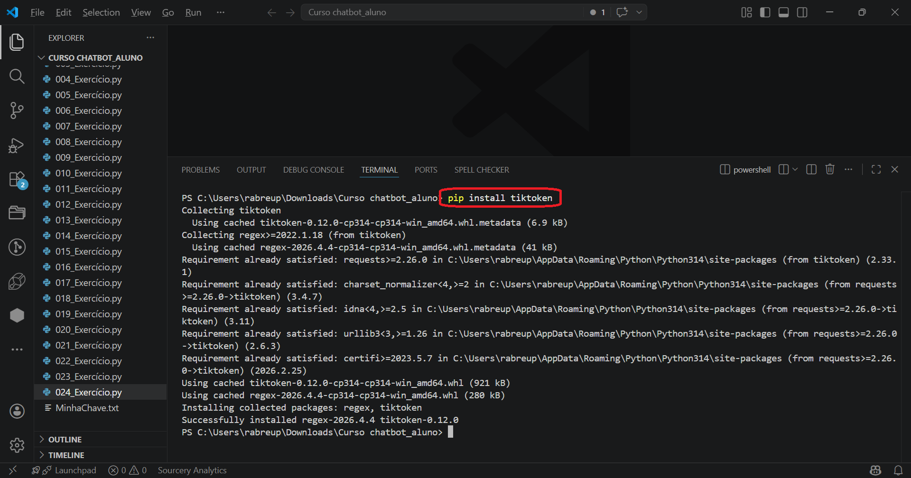
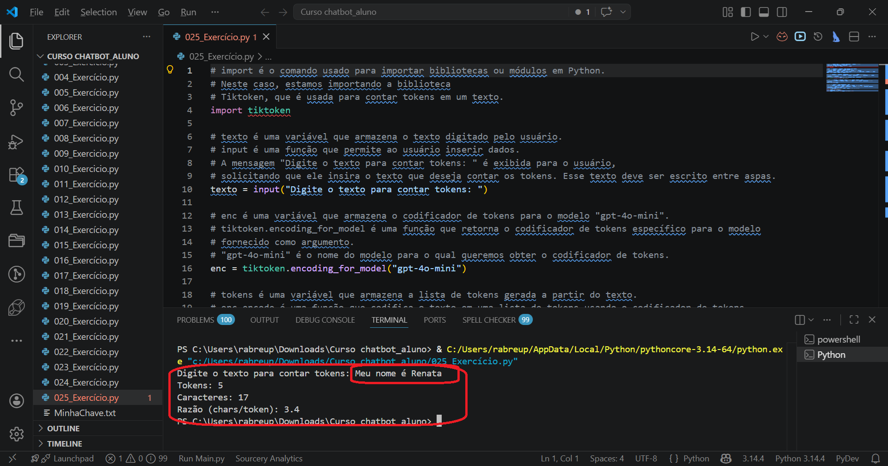
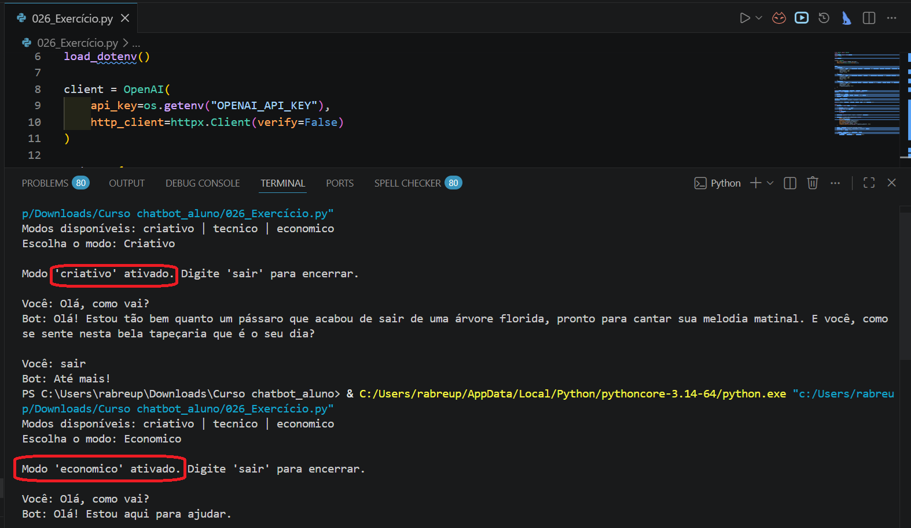
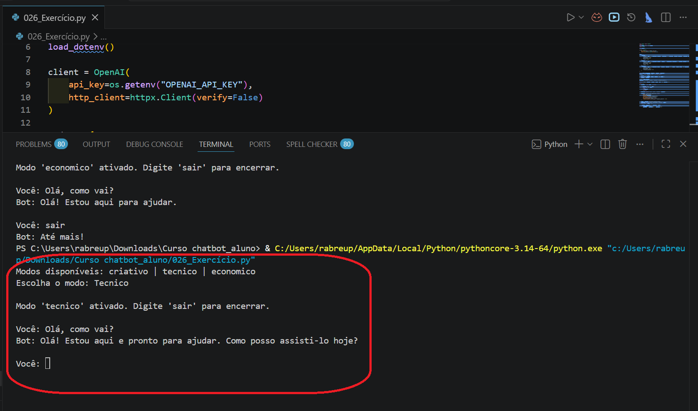
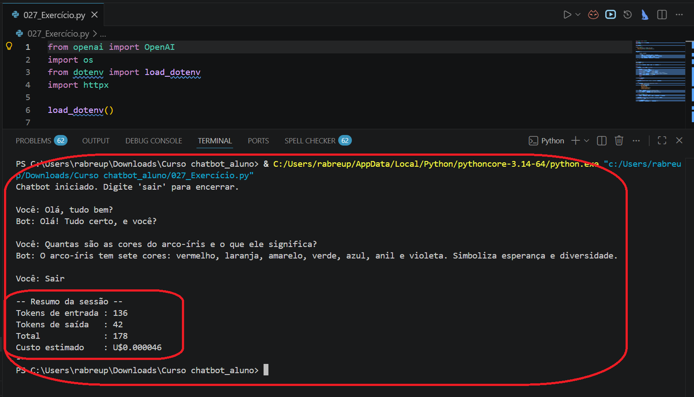
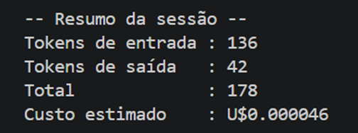

Na aula passada nós vimos que cada mensagem enviada ao GPT consome tokens, e que tokens custam dinheiro. Vimos também que o system prompt define quem o bot é e o que ele pode responder. Agora vamos ir além: nós vamos medir esse custo antes de gastar, e controlar com precisão como o GPT gera as respostas, não só o que ele responde.
Pequenos ajustes nos parâmetros da chamada mudam completamente o comportamento do bot. A mesma pergunta pode receber uma resposta criativa e longa, ou direta e curtíssima, dependendo de como nós configuramos. Vamos ver isso na prática.
Sabemos que tokens custam dinheiro. Mas antes de medir, vale entender o que o GPT está medindo. Um token não é uma palavra inteira. É o pedaço em que o modelo divide o texto para processar. Pode ser um caractere só, pode ser uma palavra completa, pode ser metade de uma palavra. Espaços, pontuação, números e símbolos também entram na conta. Em inglês, a estimativa costuma ser 1 token para cada 4 caracteres ou 0,75 palavra. Em português, por causa dos acentos e das palavras mais longas, o número de tokens por palavra tende a ser um pouco maior. Aqui está a regra prática para guardar:
E atenção: em cada chamada ao GPT, os tokens de entrada incluem tudo que nós enviamos, o system prompt, o histórico da conversa e a pergunta do usuário. Os tokens de saída são os que o GPT gera para montar a resposta. Saída costuma custar mais por token do que entrada. Quanto maior o histórico acumulado, maior o custo de entrada a cada rodada.
Com isso em mente, podemos nos perguntar: mas como saber, antes de enviar para a API, quantos tokens um texto vai consumir? É para isso que existe o tiktoken. Trata-se de uma biblioteca criada pela própria OpenAI que conta tokens localmente, sem fazer nenhuma requisição paga. Nós a usamos para medir textos antes de gastar.
Para instalar, vamos abrir o terminal do VSCode e rodar:
pip install tiktoken

Com a biblioteca instalada, o código para contar tokens fica assim:
import tiktoken texto = input("Digite o texto para contar tokens: ") enc = tiktoken.encoding_for_model("gpt-4o-mini") tokens = enc.encode(texto) print(f"Tokens: {len(tokens)}") print(f"Caracteres: {len(texto)}") print(f"Razão (chars/token): {len(texto)/len(tokens):.1f}")
| import tiktoken | Importa a biblioteca de contagem de tokens. Ela processa tudo localmente, sem internet, usando as mesmas regras internas que o GPT usa para dividir o texto em pedacinhos. |
| encoding_for_model("gpt-4o-mini") | Carrega as regras de divisão do modelo específico. Cada modelo pode fatiar o texto de forma ligeiramente diferente. Passamos "gpt-4o-mini" para garantir que a contagem seja idêntica à que acontece na API quando enviamos a mensagem de verdade. |
| enc.encode(texto) | Divide o texto em tokens e retorna uma lista. Cada item da lista é um número que representa um fragmento do texto. O len() dessa lista nos diz exatamente quantos tokens o texto possui. |
| len(texto)/len(tokens) | Calcula a razão entre caracteres e tokens. Isso nos permite comparar com a estimativa que vimos na aula passada (1 token ≈ 3 a 4 caracteres) e ver se ela se confirma para textos em português. |

Faz sentido pensar assim no início. Mas pensa no seguinte: em projetos reais, os usuários podem mandar mensagens enormes, parágrafos inteiros, textos copiados de algum lugar. Cada mensagem dessas custa muito mais do que o esperado. Com o tiktoken, nós conseguimos verificar o tamanho antes de gastar e, se necessário, avisar o usuário: "sua mensagem está muito longa, por favor resuma". Custo controlado antes de acontecer.
Agora que nós sabemos medir tokens, vamos falar dos parâmetros que controlam como o GPT gera as respostas. Até agora, nas chamadas que fizemos, passamos apenas o modelo e as mensagens. Mas a API aceita vários outros ajustes que mudam completamente o comportamento da IA.
Pensa assim: o system prompt diz ao GPT o que fazer. Os parâmetros controlam como ele executa isso, com que criatividade, com que tamanho de resposta, com que variedade de palavras.
| parâmetro | valores | o que controla |
|---|---|---|
| temperature | 0.0 a 2.0 | A criatividade da resposta. Zero é previsível e focado: o GPT sempre escolhe a palavra mais provável. Dois é caótico e inventivo. Para bots técnicos ou de suporte, o ideal fica entre 0.1 e 0.3. Para escrita criativa, entre 0.7 e 1.2. |
| max_tokens | 1 a 16384 | O tamanho máximo da resposta. O GPT para de gerar quando atinge esse número, mesmo que a frase não tenha terminado. É um limite físico, não uma instrução, então nós usamos junto com o prompt para evitar cortes bruscos. |
| top_p | 0.0 a 1.0 | A diversidade do vocabulário. Com 1.0 o GPT considera todas as palavras possíveis. Com 0.1 só considera as mais prováveis. Funciona em conjunto com temperature. Não é comum usar os dois com valores altos ao mesmo tempo. |
| frequency_penalty | -2.0 a 2.0 | Penalidade por repetição de palavras. Valores positivos reduzem a chance de a mesma palavra aparecer várias vezes numa resposta. Torna o texto mais natural e variado. |
| presence_penalty | -2.0 a 2.0 | Incentivo para abordar novos temas. Valores positivos fazem o GPT preferir assuntos que ainda não foram mencionados na conversa. Evita que o bot fique circulando na mesma ideia sem sair dela. |
Quase isso. Com temperature zero o GPT escolhe sempre a palavra mais provável a cada passo, então as respostas ficam muito parecidas para a mesma pergunta. Não são 100% idênticas por outros fatores internos, mas a variação é mínima. Para chatbots de suporte técnico ou atendimento, isso é ótimo: nós queremos consistência, não surpresa.
Uma forma muito prática de usar esses parâmetros é criar modos de resposta para o chatbot. Dependendo do contexto, nós precisamos de configurações bem diferentes. Um bot criativo de conteúdo não pode ter os mesmos ajustes de um bot de produção com custo controlado. Veja como os parâmetros se traduzem em três perfis diferentes:
temperature=1.2
top_p=0.95
max_tokens=300
Respostas imaginativas, com vocabulário variado. Bom para geração de texto, histórias, brainstorm.
temperature=0.2
top_p=0.8
max_tokens=500
Preciso e detalhado. Bom para explicações técnicas, análise de código, documentação.
temperature=0.2
max_tokens=80
frequency_penalty=0.4
Respostas curtas e diretas. Ideal para produção com custo controlado.
Vamos implementar os três modos num único código. Observe como o system prompt e os parâmetros trabalham juntos: o prompt define a intenção, os parâmetros garantem os limites técnicos.
from openai import OpenAI import os from dotenv import load_dotenv import httpx load_dotenv() client = OpenAI( api_key=os.getenv("OPENAI_API_KEY"), http_client=httpx.Client(verify=False) ) modos = { "criativo": { "system": "Você é um assistente criativo e expressivo. Use metáforas, exemplos coloridos e linguagem envolvente.", "temperature": 1.2, "max_tokens": 300, "top_p": 0.95 }, "tecnico": { "system": "Você é um assistente técnico e preciso. Dê explicações detalhadas com exemplos práticos quando necessário.", "temperature": 0.2, "max_tokens": 500, "top_p": 0.8 }, "economico": { "system": "Você é um assistente direto e objetivo. Responda em no máximo 2 frases curtas. Sem enrolação.", "temperature": 0.2, "max_tokens": 80, "frequency_penalty": 0.4 } } print("Modos disponíveis: criativo | tecnico | economico") escolha = input("Escolha o modo: ").strip().lower() if escolha not in modos: print("Modo inválido. Usando 'tecnico' como padrão.") escolha = "tecnico" config = modos[escolha] mensagens = [{"role": "system", "content": config["system"]}] print(f"\nModo '{escolha}' ativado. Digite 'sair' para encerrar.\n") while True: pergunta = input("Você: ").strip() if pergunta.lower() == "sair": print("Bot: Até mais!") break if not pergunta: continue mensagens.append({"role": "user", "content": pergunta}) resposta = client.chat.completions.create( model="gpt-4o-mini", messages=mensagens, temperature=config["temperature"], max_tokens=config["max_tokens"], top_p=config.get("top_p", 1.0), frequency_penalty=config.get("frequency_penalty", 0.0) ) texto = resposta.choices[0].message.content mensagens.append({"role": "assistant", "content": texto}) print("Bot:", texto, "\n") # Limita o histórico para controlar o custo if len(mensagens) > 10: mensagens = [mensagens[0]] + mensagens[-9:]
| modos = {...} | Um dicionário que centraliza as configurações de cada modo. Em vez de três arquivos separados, nós colocamos tudo num lugar só. Cada chave é o nome do modo e o valor é outro dicionário com o system prompt e os parâmetros daquele modo. |
| config = modos[escolha] | Seleciona as configurações do modo escolhido. A partir daqui, config é o dicionário daquele modo específico. Nós acessamos os valores via config["temperature"], config["max_tokens"] e assim por diante. |
| config.get("top_p", 1.0) | Lê um valor do dicionário com fallback. O método .get() retorna o valor da chave se ela existir, ou o segundo argumento caso ela não exista. Assim o modo econômico não precisa ter top_p declarado: o código assume 1.0 automaticamente. |
| mensagens[0] + mensagens[-9:] | Limita o histórico a 10 mensagens. O mensagens[0] é sempre o system prompt, que não pode ser descartado. O mensagens[-9:] pega as últimas 9 trocas. Resultado: no máximo 10 itens sempre, memória funcional sem custo crescente. |


Perceba a diferença: a mesma pergunta, o mesmo modelo, o mesmo mecanismo de memória. Só mudaram temperature, max_tokens e o system prompt. O resultado é completamente diferente em tamanho, estilo e custo.
Mas repara numa coisa: em todos os três modos, o system prompt também mudou. Não adiantaria nada ter os parâmetros perfeitos se o texto do prompt fosse vago. Os dois trabalham juntos, e um prompt mal escrito compromete qualquer configuração. Na aula passada nós escrevemos os primeiros, agora vamos olhar para eles com mais cuidado.
Um prompt eficaz normalmente combina quatro elementos principais: contexto, tarefa, formato e restrições.
Contexto define o cenário em que o chatbot vai atuar. Aqui, é importante deixar claro quem é o bot, para quem ele está falando, qual é o assunto da conversa e em que situação aquela interação acontece. Quanto mais claro for esse contexto, maior a chance de a resposta sair adequada ao público e ao objetivo.
Tarefa explica exatamente o que o chatbot deve fazer. Não basta dizer apenas o tema. É preciso orientar qual ação se espera dele, como responder, até onde aprofundar e, principalmente, o que ele não deve fazer. Isso evita respostas vagas, fora do foco ou inadequadas.
Formato determina como a resposta deve ser entregue. Você pode definir, por exemplo, se a saída deve vir em lista, em parágrafo, em etapas, em tabela, ou em tópicos curtos. Também pode limitar o tamanho da resposta, indicando número máximo de linhas, palavras ou itens. Esse ponto é importante para garantir padronização e clareza.
Restrições funcionam como limites e regras de comportamento. Nessa parte, vale especificar o tom da resposta, o idioma, o escopo do assunto, o nível de formalidade, o que deve ser evitado e até quais tipos de pedido o chatbot deve recusar de forma educada. As restrições ajudam a manter consistência, segurança e aderência ao objetivo da conversa.
Veja a diferença na prática. Os dois prompts abaixo são para o mesmo bot de suporte técnico:
O segundo prompt não é mais bonito, ele é mais específico. Quanto mais preciso o prompt, menos o GPT precisa adivinhar o que nós queremos, e menos tokens são desperdiçados em respostas fora do esperado.
Pode escrever, mas não vai adiantar muito. "Boa" é subjetivo: o GPT não sabe o que nós consideramos bom. O mesmo vale para "bonito", "adequado", "interessante". Em vez disso, nós usamos termos mensuráveis: "responda em no máximo 2 frases", "use linguagem formal", "inclua sempre um exemplo prático". Concreto funciona; subjetivo não.
Levanta, respira, e quando voltarmos colocaremos a mão no código de verdade.
Voltou? Pronto para continuar? Estou ansiosa para fazermos mais alguns testes.
Há dois elementos que todo chatbot em produção precisa ter e que nós ainda não vimos: tratamento de erros e monitoramento do uso real de tokens.
Nos códigos anteriores, se a API falhar, por crédito esgotado, internet caída ou chave inválida, o programa trava com uma mensagem de erro feia e para de funcionar. Em produção isso é inaceitável. A solução é o bloco try/except. Pensa nele como um "plano B": nós tentamos executar o código normal e, se algo der errado, o programa vai para o plano B em vez de travar.
try: # código que pode falhar resposta = client.chat.completions.create(...) texto = resposta.choices[0].message.content except Exception as e: print(f"Erro na API: {e}") texto = "Desculpe, houve um erro. Tente novamente."
| try: | Bloco que o Python tenta executar. Se tudo correr bem, o except é ignorado completamente. Se qualquer linha dentro do try lançar um erro, o Python pula imediatamente para o except, sem travar. |
| except Exception as e: | Captura qualquer tipo de erro e guarda o detalhe na variável e. Exception é a classe base de todos os erros em Python. O as e nos permite imprimir a mensagem de erro para entender o que aconteceu, sem o programa encerrar sozinho. |
Os erros mais comuns que nós vamos encontrar ao chamar a API são estes três:
.env está na pasta certa e se a chave foi copiada sem espaços extras.Agora o segundo elemento. A API retorna no objeto de resposta um campo chamado usage, que informa exatamente quantos tokens foram consumidos naquela chamada. Não uma estimativa: o número real, gerado pela própria OpenAI depois do processamento.
resposta = client.chat.completions.create(...) print("Tokens de entrada:", resposta.usage.prompt_tokens) print("Tokens de saída: ", resposta.usage.completion_tokens) print("Total: ", resposta.usage.total_tokens)
| resposta.usage | Objeto que a API devolve com o consumo real da chamada. Ele existe dentro de toda resposta, mesmo que nós não pedíssemos. Basta acessá-lo depois de receber a resposta. |
| prompt_tokens | Tokens de entrada consumidos nessa chamada. Inclui o system prompt, todo o histórico e a pergunta atual. Vai crescendo a cada rodada porque o histórico cresce junto, até o limite que nós definimos. |
| completion_tokens | Tokens de saída gerados pelo GPT. São os tokens que a IA criou para montar a resposta. Custam mais por unidade do que os de entrada. |
Com essas duas peças, o try/except e o usage, vamos montar o chatbot econômico completo, como ficaria num projeto real. Nós acumulamos os tokens de cada chamada e mostramos o custo total da sessão quando o usuário encerrar:
from openai import OpenAI import os from dotenv import load_dotenv import httpx load_dotenv() client = OpenAI( api_key=os.getenv("OPENAI_API_KEY"), http_client=httpx.Client(verify=False) ) mensagens = [ { "role": "system", "content": ( "Você é um assistente direto e objetivo. " "Responda de forma curta, clara e sem enrolação. " "Evite repetir palavras e frases. " "Seja eficiente e econômico nas respostas." ) } ] total_entrada = 0 total_saida = 0 print("Chatbot iniciado. Digite 'sair' para encerrar.\n") while True: pergunta = input("Você: ").strip() if pergunta.lower() == "sair": print("\n-- Resumo da sessão --") print(f"Tokens de entrada : {total_entrada}") print(f"Tokens de saída : {total_saida}") print(f"Total : {total_entrada + total_saida}") custo = (total_entrada * 0.00000015) + (total_saida * 0.0000006) print(f"Custo estimado : U${custo:.6f}") print("----------------------") break if not pergunta: continue mensagens.append({"role": "user", "content": pergunta}) try: resposta = client.chat.completions.create( model="gpt-4o-mini", messages=mensagens, max_tokens=80, temperature=0.2, frequency_penalty=0.4, presence_penalty=0.2 ) texto = resposta.choices[0].message.content total_entrada += resposta.usage.prompt_tokens total_saida += resposta.usage.completion_tokens except Exception as e: print(f"Erro na API: {e}") texto = "Desculpe, houve um erro ao processar sua mensagem." mensagens.append({"role": "assistant", "content": texto}) print("Bot:", texto, "\n") if len(mensagens) > 10: mensagens = [mensagens[0]] + mensagens[-9:]
| total_entrada = 0 total_saida = 0 |
Contadores acumulados da sessão. São iniciados fora do loop e somados a cada chamada bem-sucedida. No final, quando o usuário digitar "sair", eles revelam o custo total da conversa inteira. |
| total_entrada += resposta.usage.prompt_tokens | Acumula os tokens reais de entrada a cada chamada. O operador += soma o valor atual ao contador. O prompt_tokens inclui o system prompt, o histórico e a pergunta atual juntos. |
| total_saida += resposta.usage.completion_tokens | Acumula os tokens reais de saída. São os tokens que o GPT gerou para montar a resposta. Custam mais por unidade do que os de entrada. |
| custo = (entrada * 0.00000015) + (saida * 0.0000006) | Calcula o custo estimado em dólares. Os valores são as tarifas atuais do gpt-4o-mini: U$0,15 por milhão de tokens de entrada e U$0,60 por milhão de saída. O resultado aparece com 6 casas decimais porque os valores por sessão são bem pequenos. |


Boa pergunta. O tiktoken estima os tokens de uma string isolada. Mas o usage da API mede o custo real da chamada inteira, que inclui o system prompt, o histórico acumulado e a formatação interna que o GPT usa. Então o usage é sempre mais preciso para calcular custo. O tiktoken é útil para estimar antes de enviar; o usage é o número que vai para a fatura.
Agora é a sua vez.
028_Exercicio.py com um assistente virtual de uma pet shop chamada MiauWoof, especializada em cães e gatostotal_entrada e total_saida acumulando com resposta.usage a cada chamadafrom openai import OpenAI import os from dotenv import load_dotenv import httpx load_dotenv() client = OpenAI( api_key=os.getenv("OPENAI_API_KEY"), http_client=httpx.Client(verify=False) ) mensagens = [ { "role": "system", "content": ( # CONTEXTO "Você é a assistente virtual da MiauWoof, pet shop especializada em cães e gatos. " # TAREFA "Responda apenas sobre produtos, serviços de banho e tosa, e cuidados com pets. " "Para assuntos fora desse escopo, diga que só entende de pets. " # FORMATO "Responda em no máximo 2 frases. " # RESTRIÇÕES "Use tom carinhoso e divertido. Responda sempre em português." ) } ] total_entrada = 0 total_saida = 0 print("MiauWoof: Olá! Como posso ajudar seu pet hoje? 🐾") print("(Digite 'sair' para encerrar)\n") while True: pergunta = input("Você: ").strip() if pergunta.lower() == "sair": print("\n-- Resumo da sessão --") print(f"Tokens de entrada : {total_entrada}") print(f"Tokens de saída : {total_saida}") print(f"Total : {total_entrada + total_saida}") custo = (total_entrada * 0.00000015) + (total_saida * 0.0000006) print(f"Custo estimado : U${custo:.6f}") print("----------------------") print("MiauWoof: Volte sempre! 🐾") break if not pergunta: continue mensagens.append({"role": "user", "content": pergunta}) try: resposta = client.chat.completions.create( model="gpt-4o-mini", messages=mensagens, max_tokens=80, temperature=0.6, frequency_penalty=0.3 ) texto = resposta.choices[0].message.content total_entrada += resposta.usage.prompt_tokens total_saida += resposta.usage.completion_tokens except Exception as e: print(f"Erro: {e}") texto = "Não consegui processar sua pergunta. Tente novamente." mensagens.append({"role": "assistant", "content": texto}) print(f"MiauWoof: {texto}\n") if len(mensagens) > 10: mensagens = [mensagens[0]] + mensagens[-9:]
029_Exercicio.py com um bot de atendimento de uma academia chamada FitClubtry/except na chamada à API e mantenha o histórico limitado a 10 mensagensfrom openai import OpenAI import os from dotenv import load_dotenv import httpx load_dotenv() client = OpenAI( api_key=os.getenv("OPENAI_API_KEY"), http_client=httpx.Client(verify=False) ) # Respostas fixas - não gastam tokens respostas_fixas = { "horario": "FitClub: Funcionamos de segunda a sábado, das 6h às 22h.", "horário": "FitClub: Funcionamos de segunda a sábado, das 6h às 22h.", "preco": "FitClub: Mensalidade básica R$89 e plano completo R$149.", "preço": "FitClub: Mensalidade básica R$89 e plano completo R$149.", "mensalidade":"FitClub: Mensalidade básica R$89 e plano completo R$149.", "endereco": "FitClub: Estamos na Rua das Palmeiras, 220 - Centro.", "endereço": "FitClub: Estamos na Rua das Palmeiras, 220 - Centro.", } mensagens = [ { "role": "system", "content": ( "Você é o assistente virtual da FitClub, academia de musculação e ginástica. " "Responda dúvidas sobre treinos, modalidades e dicas de saúde. " "Use linguagem motivadora. Responda em no máximo 3 frases." ) } ] print("FitClub: Olá! Como posso ajudar? 💪") print("(Digite 'sair' para encerrar)\n") while True: pergunta = input("Você: ").strip() if pergunta.lower() == "sair": print("FitClub: Bons treinos! 🏋️") break if not pergunta: continue # Verifica se alguma palavra-chave está na pergunta resposta_fixa = None for chave in respostas_fixas: if chave in pergunta.lower(): resposta_fixa = respostas_fixas[chave] break if resposta_fixa: print(f"{resposta_fixa}\n") else: mensagens.append({"role": "user", "content": pergunta}) try: resposta = client.chat.completions.create( model="gpt-4o-mini", messages=mensagens, max_tokens=120, temperature=0.6 ) texto = resposta.choices[0].message.content except Exception as e: print(f"Erro: {e}") texto = "Não consegui responder agora. Tente novamente." mensagens.append({"role": "assistant", "content": texto}) print(f"FitClub: {texto}\n") if len(mensagens) > 10: mensagens = [mensagens[0]] + mensagens[-9:]
030_Exercicio.py com um assistente de uma escola de idiomas chamada LinguaVivatry/except e contadores de total_entrada e total_saida com resposta.usagefrom openai import OpenAI import os from dotenv import load_dotenv import httpx import tiktoken load_dotenv() client = OpenAI( api_key=os.getenv("OPENAI_API_KEY"), http_client=httpx.Client(verify=False) ) enc = tiktoken.encoding_for_model("gpt-4o-mini") LIMITE_TOKENS = 80 modos = { "informativo": { "system": ( "Você é o assistente da LinguaViva, escola de inglês e espanhol. " "Responda apenas dúvidas sobre cursos, preços, horários e matrículas. " "Use tom profissional. Responda em até 3 frases objetivas." ), "temperature": 0.2, "max_tokens": 150 }, "conversacional": { "system": ( "You are a friendly English conversation partner at LinguaViva school. " "Help students practice English. Keep it simple and encouraging. " "Respond in English, max 2 short sentences." ), "temperature": 0.8, "max_tokens": 100 } } print("Modos disponíveis: informativo | conversacional") escolha = input("Escolha o modo: ").strip().lower() if escolha not in modos: print("Modo inválido. Usando 'informativo' como padrão.") escolha = "informativo" config = modos[escolha] mensagens = [{"role": "system", "content": config["system"]}] total_entrada = 0 total_saida = 0 print(f"\nLinguaViva ({escolha}): Olá! Como posso ajudar?\n") while True: pergunta = input("Você: ").strip() if pergunta.lower() == "sair": print("\n-- Resumo da sessão --") print(f"Tokens de entrada : {total_entrada}") print(f"Tokens de saída : {total_saida}") print(f"Total : {total_entrada + total_saida}") custo = (total_entrada * 0.00000015) + (total_saida * 0.0000006) print(f"Custo estimado : U${custo:.6f}") print("----------------------") break if not pergunta: continue # Bloqueia mensagens longas antes de gastar tokens tokens_pergunta = len(enc.encode(pergunta)) if tokens_pergunta > LIMITE_TOKENS: print(f"LinguaViva: Mensagem muito longa ({tokens_pergunta} tokens). Por favor, escreva de forma mais curta.\n") continue mensagens.append({"role": "user", "content": pergunta}) try: resposta = client.chat.completions.create( model="gpt-4o-mini", messages=mensagens, temperature=config["temperature"], max_tokens=config["max_tokens"] ) texto = resposta.choices[0].message.content total_entrada += resposta.usage.prompt_tokens total_saida += resposta.usage.completion_tokens except Exception as e: print(f"Erro: {e}") texto = "Não foi possível responder agora. Tente novamente." mensagens.append({"role": "assistant", "content": texto}) print(f"LinguaViva: {texto}\n") if len(mensagens) > 10: mensagens = [mensagens[0]] + mensagens[-9:]
Na Aula 5 nós vamos dar um passo a mais. Nos vemos lá!